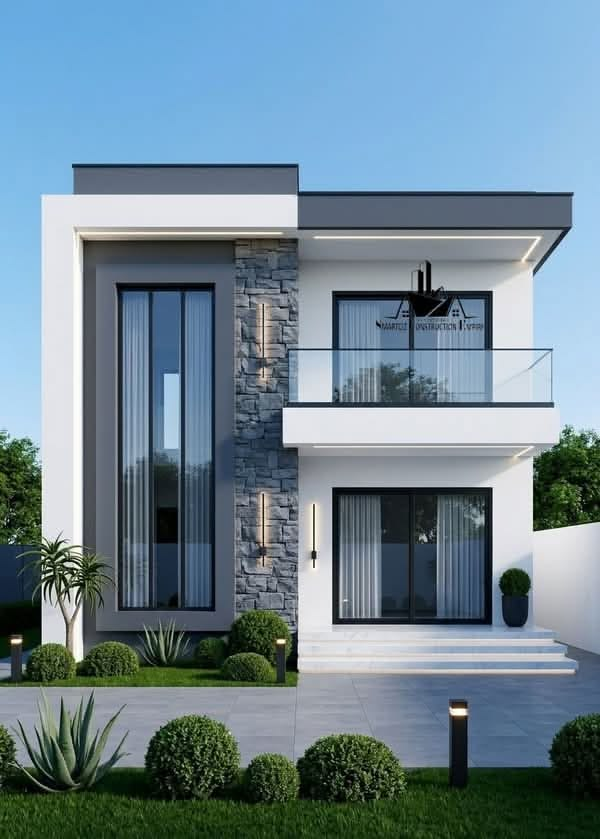

Une première réalisation qui marque le début d’une vision. Maison contemporaine
Cette maison résidentielle, réalisée à Kinshasa, constitue l’une de mes premières œuvres dans le domaine de la conception et de la construction. Elle traduit ma volonté de proposer une architecture moderne, harmonieuse et adaptée aux exigences de la vie contemporaine. Le projet se distingue par une façade épurée et élégante, caractérisée par des lignes géométriques, de larges baies vitrées et une association équilibrée de tons clairs, de gris et de revêtements en pierre. Le jeu entre les volumes, le balcon vitré et les ouvertures généreuses apporte à l’ensemble une identité architecturale à la fois sobre et raffinée. Une attention particulière a également été accordée aux espaces extérieurs. L’aménagement paysager, composé de végétation ornementale, de pelouse et d’un accès soigneusement traité, crée une transition agréable entre l’espace extérieur et l’habitation. À travers cette réalisation, mon objectif était de démontrer qu’un projet résidentiel peut conjuguer esthétique, fonctionnalité, confort et qualité de conception, tout en tenant compte du contexte architectural de Kinshasa.